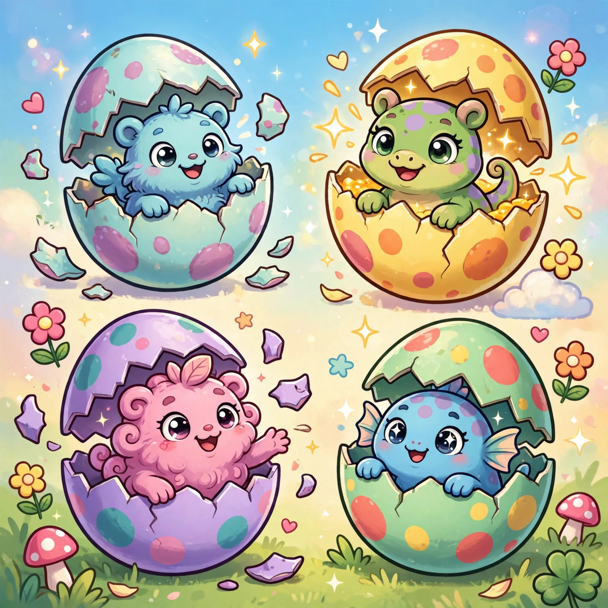
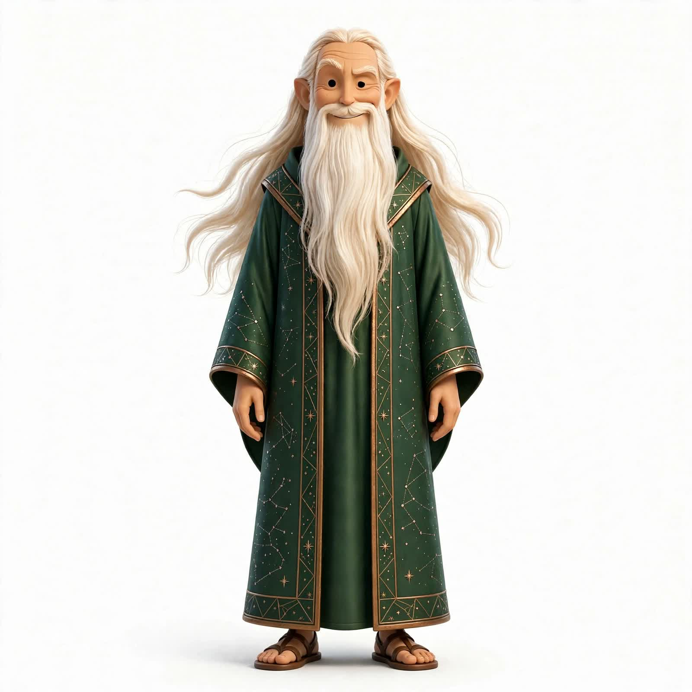
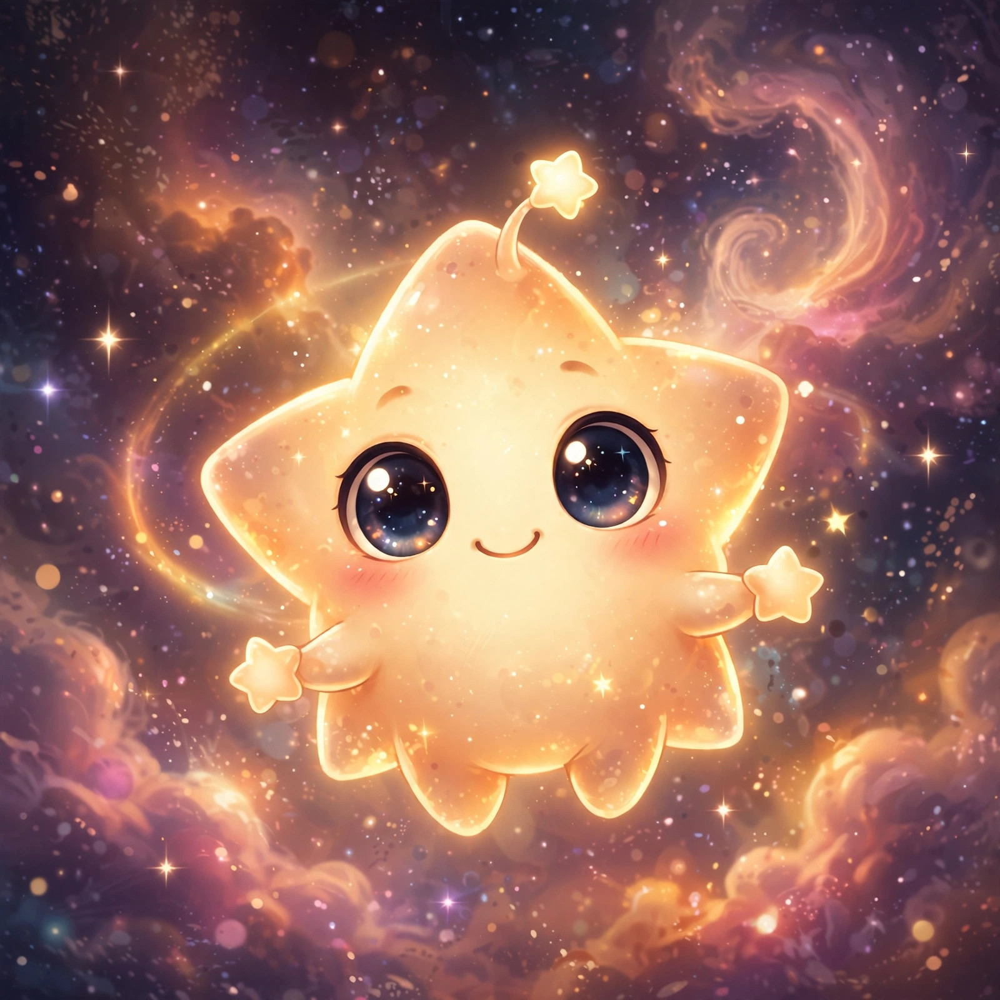
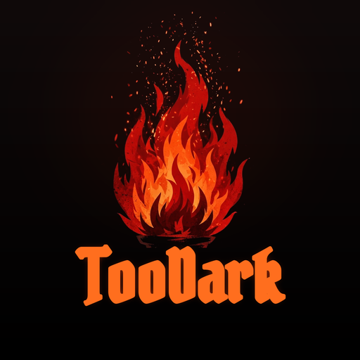
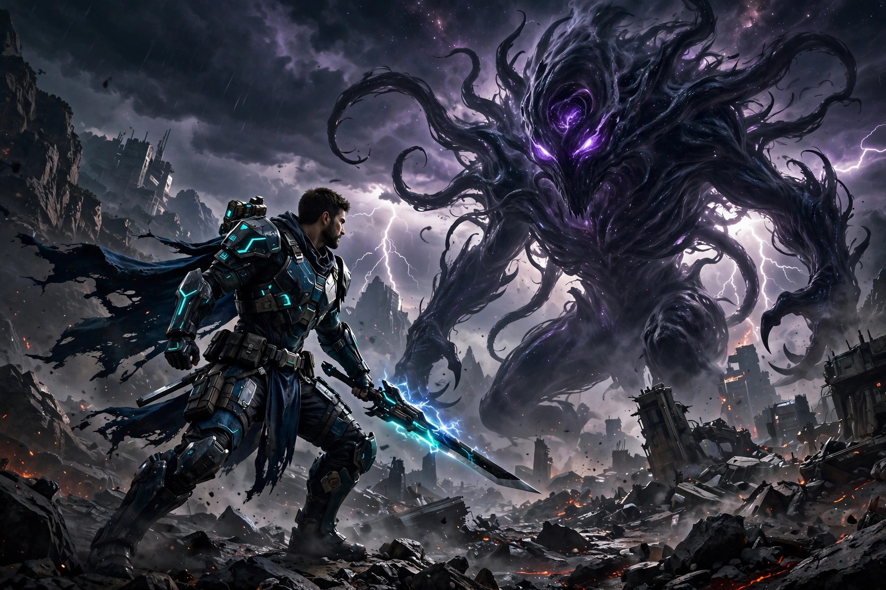

Stable

Hatchem!
Egg-hatching creature collector
Hatch eggs, raise a menagerie of odd little monsters across five rarities, evolve them, and battle your way to a full Hatchidex. Cozy by design.
@zombombadil
Songs from the dark between stars.
Music for worlds that don't exist yet — and the games being built to house them.
↓Ask the Crystal Ball
Ask a question, tap the ball, and let the stars answer.

The ball speaks in riddles, quips, and occasional hard truths. For entertainment — the real magic is in the music below.
Music
Music of the Ainur — a song-cycle about the making of a world: first light, deep water, green growing things, and the discord that shadows them all. Seven movements, from the kindling to the last voyage.
All seven movements are live — press play.
Creative Works
A separate album of creative works — storm-forged sound, steel and rift, outside the Ainulindalë cycle.
Creative Works
A guide to feeling good — songs that point you home when the road gets strange.
Games
Stable builds up top, works in progress below — all offline-first, all made to be played, not to be monetized.

Egg-hatching creature collector
Hatch eggs, raise a menagerie of odd little monsters across five rarities, evolve them, and battle your way to a full Hatchidex. Cozy by design.

Tamagotchi-style companion app
Raise Mote, a star-being with moods and needs, battle in the arena, tune into 15,000+ radio stations, and send Cohesion codes to friends. Your pocket companion.

2D dark-fantasy action-RPG
Real-time combat, infinite procedurally generated depths, gothic pixel art, torchlight and blood. Four classes, three companions, four story chapters — and something giant waiting every fourth depth.
Light is survival: torches, tiered lanterns, and light pools hold back the dread in the dark, while an elemental axe with eight attunements carves through room-clear dungeons across the mirrored Dawn and Umbral realms.

3D action-RPG
Four classes, five wild regions, recruitable sidekicks, and a hunger waiting at the heart of the void. Forged for phone-first play. Currently parked while the art pipeline is rebuilt.
Playable in your browser, no download needed. More builds land here as they are ready for hands.
About
ZomBombadil is the songwriting shadow of a worldbuilder — part skald, part tinkerer, working late under indifferent stars.
The method is simple: dream up a world, write its music, then build the game it deserves to live in. Everything here is made by hand and by heart, free of ads and noise — visitor counts use privacy-friendly, cookie-free analytics.
TooDark — a 2D dark-fantasy action RPG and Light Mechanic RPG: real-time combat, infinite procedurally generated depths, gothic pixel art, torchlight and blood. Four classes, three companions, four story chapters, giant bosses every fourth depth. Light — torches, tiered lanterns, light pools — holds back the dread in the dark.
Hatchem! — a family-friendly egg-hatching monster collector: hatch eggs, collect 21 original species across 5 rarities, level and evolve them, turn-based battles, TCG-style booster packs. Fully offline.
ENTITY — a 3D third-person action RPG: four classes, five zones, flying mounts, WoW-style loot, recruitable AI sidekicks. Currently parked while the art pipeline is rebuilt.
Ainulindalë: Music of the Ainur — a Silmarillion-themed album, seven movements complete.
If a song or a game finds you, it was meant to.
Contact
Bookings, collaborations, or word from your corner of the void — all welcome.
Email routing is still being wired up behind the scenes — the address is reserved, so write away; replies may drift a while before they arrive.